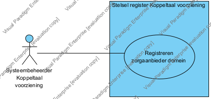

|
|
|
Specifieke architectuur : Model . Koppeltaal : Model . Ontwerp : Package . Functoinaliteit : Package . Registreren zorgaanbieder domein : Package . Use case : Package
 Use Case Diagram - Registreren zorgaanbieder domein [KT.UC.101]
Use Case Diagram - Registreren zorgaanbieder domein [KT.UC.101]
 link
link
| Jump to: |
|  |